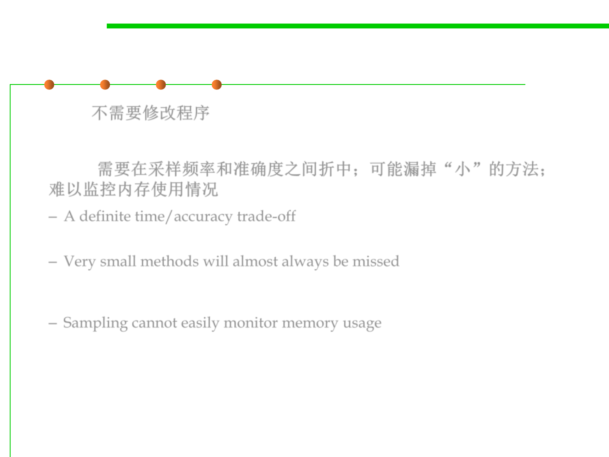

8.2 Dynamic Program Analysis Methods and Tools
Sampling Pros & Cons
▪ Pros: 不需要修改程序
– No modification of application is necessary
▪ Cons: 需要在采样频率和准确度之间折中；可能漏掉“小”的方法；
难以监控内存使用情况
– A definite time/accuracy trade-off
• A high sample rate is accurate, but takes a lot of time
– Very small methods will almost always be missed
• If a small method is called frequently and you have are unlucky, small but
expensive methods may never show up
– Sampling cannot easily monitor memory usage